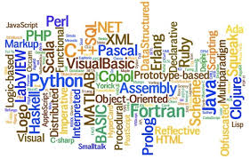

Since the 1970s, computer experts have created more than 700 different programming languages. Each language has a unique way of helping computers process huge amounts of information. Every coding language has different features and terms with some overlap. New coders shouldn’t be overwhelmed by the plethora of programming types though. There are only about a dozen programming languages that are commonly used. These include Ruby, Swift, JavaScript, Cobol, Objective-C, Visual Basic, and Perl. Let’s look at some of the major coding languages about which beginners should know.